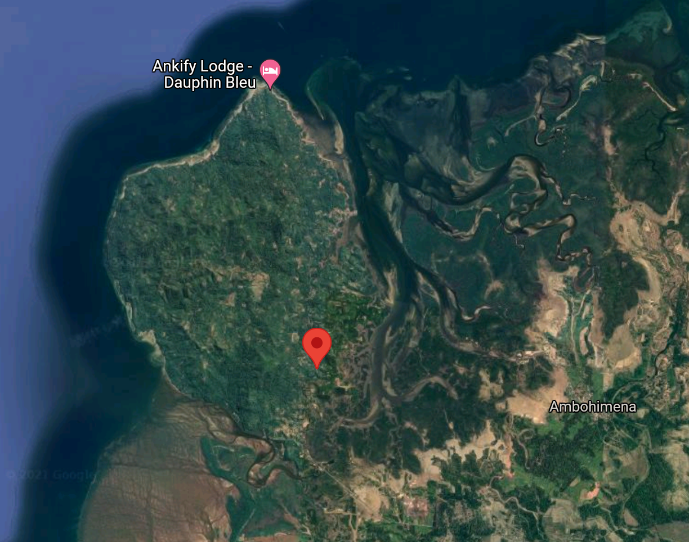

Test Methodology
We’ve done our best to translate Grbic et al. 2015 into trade-relevant language with locale names instead of haplotypes, but it is pretty technical. Feel free to jump on the comment thread below and let us know if you have any questions.
This test will compare each submission to baseline data collected in 2011 from 324 wild specimens in Madagascar, sequenced and geo-coded by Grbic et al, 2015. We expect the test’s requirement to be a piece of shed skin the size of a quarter or larger, but we will need to run a few examples to see if the genetic material found in chameleon skin is sufficient (it is for many lizard species).
We will examine both the mtDNA and nuDNA in the sample and match it with the 11 haplotypes identified in Grbic et al. Wild Furcifer pardalis populations are isolated enough that locales have a minumum of 6 unique genetic mutations that are not shared by any other population. As we discussed earlier, that genetic distance is much larger than any cb line could have developed in captivity. There are a lot more than 11 locales listed on MadCham, so there will be gaps in the initial test. See the Haplotype Key below for details.
In their paper, Grbic et al. created this genealogical UMP network to map out the mutations that define the haplotypes:
 Panther chameleon mtDNA genealogical UMP (Cassens et al. 2005) network. Haplotypes are represented with coloured circles, the sizes of which are proportional to the number of individuals (smallest = 1, largest = 72). Inferred missing haplotypes are shown as small black dots, and each line indicates a mutational change (numbers of mutations >1 are shown inside larger black dots). Haplotypes are grouped into colour-coded haplogroups; sub-haplogroups 1a and 1b correspond to samples from the northwest coast and the island Nosy Komba, respectively. Haplotypes in white with grey border circles correspond to animals from Reunion (R) and the pet market (L1–L3). (Grbic et al., 2015)
Panther chameleon mtDNA genealogical UMP (Cassens et al. 2005) network. Haplotypes are represented with coloured circles, the sizes of which are proportional to the number of individuals (smallest = 1, largest = 72). Inferred missing haplotypes are shown as small black dots, and each line indicates a mutational change (numbers of mutations >1 are shown inside larger black dots). Haplotypes are grouped into colour-coded haplogroups; sub-haplogroups 1a and 1b correspond to samples from the northwest coast and the island Nosy Komba, respectively. Haplotypes in white with grey border circles correspond to animals from Reunion (R) and the pet market (L1–L3). (Grbic et al., 2015)
Haplotype Key
| Locale | Haplotype |
|---|---|
| Ambanja | 1a |
| Nosy Komba | 1b |
| Nosy Be | 2 |
| Ambilobe East | 3 |
| Ankify | 4* |
| Amber Mountain, Ambilobe East, Antseranana (Diego Suarez) | 5 |
| Amber Mountain | 6 |
| Ambilobe West, Daraina | 7 |
| Vohemar | 8 |
| East Coast, Nosy Boraha | 9 |
| Andapa, Sambava, Antalaha | 10 |
| Between Sambava and Vohemar | 11** |
* 1 sample ** 2 samples

Ambilobe
We usually think of Ambilobe as a coherent locale. However, this analysis shows that the western population between Ambilobe and Sirama is quite different from the eastern population found along the road towards Daraina. There is a mountain range that runs from the northeast of Ambilobe down to the southwest, and my guess is that is why there is this east-west divide. The western population is also at a much higher elevation, so there probably is some level of local adaptation occurring there. Our test could help identify the animals that could benefit from some cooler nighttime temps like their higher elevation ancestors if they’re in haplotype 7 vs the lowland haplotype 3 group. I’m very curious to see how my Ambilobe shake out!
Ankify
I looked up the exact coordinates of the pink dot (haplotype 4). That sample was taken just north of the mangrove forest that separates Ambanja from Ankify, in Ankify!

Haplotype 4 only had 1 individual in it, but this is initial evidence that the Ankify population does not breed with other Ambanja in the wild because there was a noticeable genetic separation of 21 unique mutations relative to the main Ambanja haplotype. Interestingly, Ankify split off the tree before Ambilobe. There are a number of other “sub-locales” or small distinct populations along the northwest coast between Ambanja and Ambilobe as well as within the Ambanja range. It would be amazing if we could get better data on some of those populations.
Andapa, Antalaha, and Sambava
Grbic et al. identified a single haplotype that includes what we would commonly consider three distinct locales. If you look at the light green, haplotype 10, in the UMP network (above), you will see it is one of the largest samples. There are very few mutations separating each node, but lots of nodes. That means that there is enough movement and interbreeding among these three locales that a genetic test will probably not be able to distinguish between them. We’ll see if there is an identifying mutation as we get more samples, but initially the test will just report haplotype 10 for all three.